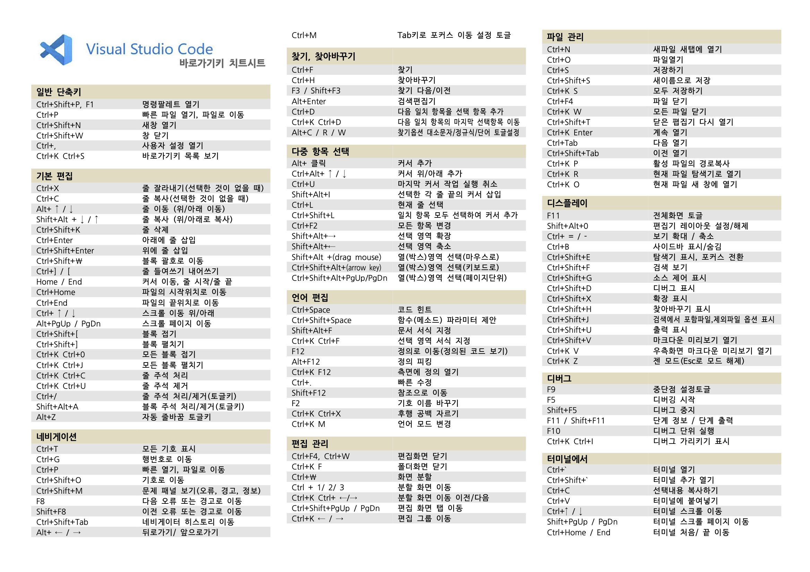

프로그램 setting
VS Code
설치 목록
Setting List
- Open in browser
- Live server
- HTML tag wrapper
- HTML wrapper
- FTP-simple : 서버 연결
- Sass
- Live Sass Compiler
- scss-lint
단축키
Shortcut
Basic
- Ctrl + B : 토글
- Tab : 자동 입력
- Alt + Shift + 아래 : Copy
- Alt + z : 자동 줄바꿈
Extensions
- Open in browser : Alt + B
- HTML tag wrapper : Ctrl + I (태그 있을 때만 가능)
- HTML wrapper : Ctrl + W

Photoshop CC / Zeplin 작업
Git
순서
Setting Order
API
Setting
Kakao Map (Kakao Develpers)
- 내 애플리케이션 > 애플리케이션 추가하기 > JavaScript 키
- 플랫폼 등록
- 문서 > 지도/로컬 API 가이드 > 지도 : 설명이 있다. 문서 지도
하위 브라우저
하위 브라우저
하위 브라우저
IE
- padding size 수치 차이 (1px)
- image 확장자 .webp ⇒ .png, .jpg
- 조건부주석 (X)
IE 10
IE 9
- position : fixed
- iframe 동영상 ⇒ a 링크 background 삽입
- transition: .3s (X)
IE 8
- background-size ⇒ img 삽입 후 크기 조절
- transform : translate(-50%, -50%) ⇒ margin: px auto 0 (margin-collapsing)
- border-radius (X)
- letter-spacing 수치 차이
- color : rgba ⇒ rgb (a 인식 못함)
- :last-child ⇒ class 명 사용
- iframe 동영상 ⇒ img 삽입
- image 확장자 .svg (X)
- JS
- .click() .slideDown,Up()
- .click() .toggle()
IE 조건부주석